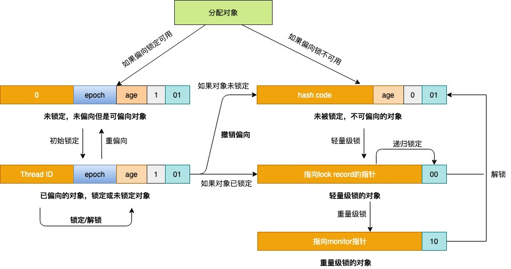
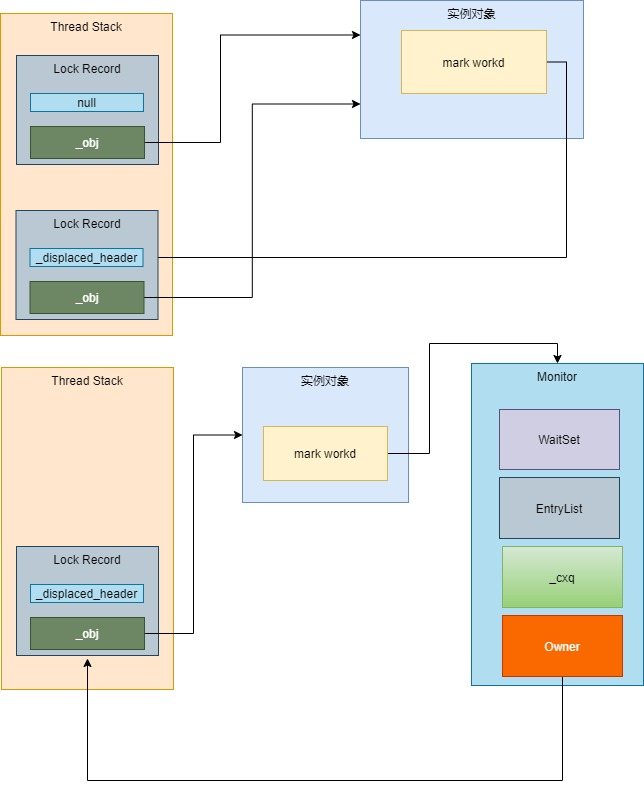
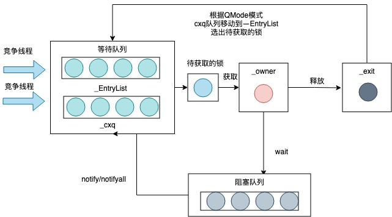

Synchronized¶
Synchronized 使用监视器实现的。Java中的每个对象都与一个监视器关联,线程可以锁定和解锁监视器。一次只能有一个线程在监视器上保持锁。任何其他试图锁定该监视器的线程都将被阻止，直到它们可以在该监视器上获得锁定为止。
-
用法¶
| 锁的对象 | 具体位置 | 伪代码 |
|---|---|---|
| Object | 方法 | public synchronized void method() { ...... } |
| 代码块 | public void method() { synchronized (this) { ...... } } | |
| 代码块 | public void method() { synchronized (object) { ...... } } | |
| Class | 方法 | public static synchronized void method() { ......} |
| 代码块 | public void method() { synchronized (SynchronizedDemo.class) { ...... } } |
-
锁的实现¶
-
查看方法上的锁，通过反编译查看字节码
public int i = 0; public synchronized void add() { i++; }public synchronized void add(); descriptor: ()V flags: ACC_PUBLIC, ACC_SYNCHRONIZED Code: stack=3, locals=1, args_size=1 0: aload_0 1: dup 2: getfield #2 // Field i:I 5: iconst_1 6: iadd 7: putfield #2 // Field i:I 10: returnflags里面有一个
ACC_SYNCHRONIZED标志,这个标识表示JVM是同步方法 -
同步代码块的锁
public int i = 0; public void decrement() { synchronized (this) { i--; } }public void decrement(); descriptor: ()V flags: ACC_PUBLIC Code: stack=3, locals=3, args_size=1 0: aload_0 1: dup 2: astore_1 3: monitorenter 4: aload_0 5: dup 6: getfield #2 // Field i:I 9: iconst_1 10: isub 11: putfield #2 // Field i:I 14: aload_1 15: monitorexit 16: goto 24 19: astore_2 20: aload_1 21: monitorexit 22: aload_2 23: athrow 24: return同步方法使用了 monitorenter上锁，monitorexit解锁 第二个monitorexit是抛出异常后解锁
-
Java对象信息¶
| JAVA实例对象 | ||
|---|---|---|
| 对象头 | mark word | 锁,年龄,hashcode,线程ID ... |
| klass word | 32位存放32bit64位默认开启指针压缩是32bit 不开启是64bit 开启 -XX:+UseCompressedOops 关闭 -XX:-UseCompressedOops | |
| 实例数据 | Java自定义字段，参数类型的长度 | |
| 对齐填充 | 对象间默认按照8byte对齐，对齐则不需要padding，否则需要padding补充8byte对齐 | |
-
Ordinary Object Pointers（OOPs）普通对象指针¶
oopDesc 使用了以下信息描述指针:
class oopDesc { friend class VMStructs; private: // mark word volatile markOop _mark; // klass word union _metadata { Klass* _klass; narrowKlass _compressed_klass; } _metadata;#### 64位 mark word 格式如下：锁状态 57bit 4bit 1bit 2bit 25bit 29bit 2bit 1bit 是否偏向锁 锁标识位 无锁 25位未使用 31位hasecode 1位未使用 对象的分带年龄 0 01 偏向锁 54位线程ID 2位epoch 1位未使用 对象分带年龄 1 01 轻量级锁 指向栈中记录的指针62位 00</td 重量级锁 指向重量级锁的指针62位 10 GC标记 空 11 -
锁优化¶

-
Lock Record（锁记录）¶
当字节码解释器执行 monitorenter 字节码轻量级锁锁住一个对象时，就会在获取锁的线程的栈上显式或者隐式分配一个 Lock Record 空间。
class BasicLock VALUE_OBJ_CLASS_SPEC { friend class VMStructs; private: volatile markOop _displaced_header; // 被锁的对象头信息 } class BasicObjectLock VALUE_OBJ_CLASS_SPEC { friend class VMStructs; private: BasicLock _lock; oop _obj; // 持有锁线程对象 }
-
偏向锁¶
在大多数情况下，锁不仅不存在多线程竞争，而且总是由同一线程多次获得，为了让线程获得锁的代价更低，引进了偏向锁
#偏向锁默认是在程序启动4秒后才激活， #开启偏向锁 -XX:+UseBiasedLocking -XX:BiasedLockingStartupDelay=0 #关闭变向锁 -XX:-UseBiasedLocking##### 偏向锁的获取 [bytecodeInterpreter.cpp](https://github.com/openjdk/jdk8u/blob/4a4236a366eeb961baf157f0938634c1647c447f/hotspot/src/share/vm/interpreter/bytecodeInterpreter.cpp#L1814)CASE(_monitorenter): { // 锁对象 oop lockee = STACK_OBJECT(-1); // 获取锁记录 BasicObjectLock* limit = istate->monitor_base(); BasicObjectLock* most_recent = (BasicObjectLock*) istate->stack_base(); BasicObjectLock* entry = NULL; while (most_recent != limit ) { if (most_recent->obj() == NULL) entry = most_recent; else if (most_recent->obj() == lockee) break; most_recent++; } // 成功分配一个lock record if (entry != NULL) { // 将lock record的Object 指针指向锁对象 entry->set_obj(lockee); int success = false; // 读取class中的epoch值 uintptr_t epoch_mask_in_place =(uintptr_t)markOopDesc::epoch_mask_in_place; // 对象的mark word markOop mark = lockee->mark(); intptr_t hash = (intptr_t) markOopDesc::no_hash; // 如果锁对象是偏向模式 if (mark->has_bias_pattern()) { uintptr_t thread_ident; uintptr_t anticipated_bias_locking_value; thread_ident = (uintptr_t)istate->thread(); // 判断是否获取偏向锁 // (uintptr_t)lockee->klass()->prototype_header() // class 对象头信息 // 偏向 epoch 线程ID // 00000101 00000001 00000000 ... 00000000 klass的对象头 // 00000101 00000001 10010001 ... 10010001 or 线程ID // 00001101 00000001 10010001 ... 10010001 实例对象头 // 00001000 00000000 00000000 ... 00000000 异或操作只剩分带年龄 // 01110000 00000000 00000000 ... 00000000 年龄去and // 00000000 00000000 00000000 ... 00000000 线程相同最终返回成功 anticipated_bias_locking_value = (((uintptr_t)lockee->klass()->prototype_header() | thread_ident) ^ (uintptr_t)mark) & ~((uintptr_t) markOopDesc::age_mask_in_place); // 已偏向当前线程 成功获取偏向锁 if (anticipated_bias_locking_value == 0) { success = true; } // 如果偏向模式关闭，则尝试撤销偏向锁 else if((anticipated_bias_locking_value& markOopDesc::biased_lock_mask_in_place) != 0) { ........ } // 如果epoch不等于class中的epoch，则尝试重偏向 else if ((anticipated_bias_locking_value & epoch_mask_in_place) !=0) { ....... } else { // 匿名偏向的mark word，尝试用CAS指令替换掉锁对象的mark word markOop header = (markOop) ((uintptr_t) mark &((uintptr_t)markOopDesc::biased_lock_mask_in_place |(uintptr_t)markOopDesc::age_mask_in_place | epoch_mask_in_place)); if (hash != markOopDesc::no_hash) { header = header->copy_set_hash(hash); } // 行的对象头信息 markOop new_header = (markOop) ((uintptr_t) header | thread_ident); // 替换对象头信息 if (Atomic::cmpxchg_ptr((void*)new_header, lockee->mark_addr(), header) == header) { if (PrintBiasedLockingStatistics) (* BiasedLocking::anonymously_biased_lock_entry_count_addr())++; } else { // 如果修改失败说明存在多线程竞争，所以进入monitorenter方法 CALL_VM(InterpreterRuntime::monitorenter( THREAD, entry),handle_exception); } success = true; } } }##### 偏向锁重偏向 bytecodeInterpreter.cpp
如果epoch已过期，则需要重偏向
// 如果epoch不等于class中的epoch，则尝试重偏向 else if ((anticipated_bias_locking_value & epoch_mask_in_place) !=0) { // 构造一个偏向当前线程的mark word markOop new_header = (markOop) ( (intptr_t) lockee->klass()->prototype_header() | thread_ident); if (hash != markOopDesc::no_hash) { new_header = new_header->copy_set_hash(hash); } // CAS替换对象头的mark word if (Atomic::cmpxchg_ptr((void*)new_header, lockee->mark_addr(), mark) == mark) { if (PrintBiasedLockingStatistics) (* BiasedLocking::rebiased_lock_entry_count_addr())++; } else { // 重偏向失败，代表存在多线程竞争，则调用monitorenter方法进行锁升级 CALL_VM(InterpreterRuntime::monitorenter(THREAD, entry), handle_exception); } success = true; }##### 偏向锁重的撤销 interpreterRuntime.cpp
IRT_ENTRY_NO_ASYNC(void, InterpreterRuntime::monitorenter(JavaThread* thread, BasicObjectLock* elem)){ // 如果开启了偏向锁 走fast_enter方法 if (UseBiasedLocking) { // Retry fast entry if bias is revoked to avoid unnecessary inflation ObjectSynchronizer::fast_enter(h_obj, elem->lock(), true, CHECK); } else { ObjectSynchronizer::slow_enter(h_obj, elem->lock(), CHECK); } }ObjectSynchronizer::fast_enter
void ObjectSynchronizer::fast_enter(Handle obj, BasicLock* lock, bool attempt_rebias, TRAPS) { if (UseBiasedLocking) { if (!SafepointSynchronize::is_at_safepoint()) { // 撤销和重偏向 BiasedLocking::Condition cond = BiasedLocking::revoke_and_rebias(obj, attempt_rebias, THREAD); if (cond == BiasedLocking::BIAS_REVOKED_AND_REBIASED) { return; } } else { assert(!attempt_rebias, "can not rebias toward VM thread"); // 安全撤销 BiasedLocking::revoke_at_safepoint(obj); } assert(!obj->mark()->has_bias_pattern(), "biases should be revoked by now"); } slow_enter (obj, lock, THREAD) ; }BiasedLocking::revoke_and_rebias BiasedLocking::revoke_at_safepoint
static BiasedLocking::Condition revoke_bias(oop obj, bool allow_rebias, bool is_bulk, JavaThread* requesting_thread, JavaThread** biased_locker) { ........ uint age = mark->age(); // 构建两个mark word，一个是匿名偏向模式（101），一个是无锁模式（001） markOop biased_prototype = markOopDesc::biased_locking_prototype()->set_age(age); markOop unbiased_prototype = markOopDesc::prototype()->set_age(age); JavaThread* biased_thread = mark->biased_locker(); if (biased_thread == NULL) { // 对象匿名偏向 如果我们走到这里 // 取消了偏向锁因为我们调用了hash code if (!allow_rebias) { obj->set_mark(unbiased_prototype); } if (TraceBiasedLocking && (Verbose || !is_bulk)) { tty->print_cr(" Revoked bias of anonymously-biased object"); } return BiasedLocking::BIAS_REVOKED; } // 判读偏向线程是否存活 bool thread_is_alive = false; // 如果当前线程就是偏向线程 if (requesting_thread == biased_thread) { thread_is_alive = true; } else { // 遍历当前jvm的所有线程，如果能找到，则说明偏向的线程还存活 for (JavaThread* cur_thread = Threads::first(); cur_thread != NULL; cur_thread = cur_thread->next()) { if (cur_thread == biased_thread) { thread_is_alive = true; break; } } } // 如果偏向的线程已经不存活了 if (!thread_is_alive) { if (allow_rebias) { obj->set_mark(biased_prototype); } else { obj->set_mark(unbiased_prototype); } // 允许重偏向则将对象mark word设置为匿名偏向状态，否则设置为无锁状态 if (TraceBiasedLocking && (Verbose || !is_bulk)) { tty->print_cr(" Revoked bias of object biased toward dead thread"); } return BiasedLocking::BIAS_REVOKED; } // 线程还存活则遍历线程栈中所有的Lock Record GrowableArray<MonitorInfo*>* cached_monitor_info =get_or_compute_monitor_info (biased_thread); BasicLock* highest_lock = NULL; for (int i = 0; i < cached_monitor_info->length(); i++) { MonitorInfo* mon_info = cached_monitor_info->at(i); // 如果能找到对应的Lock Record说明偏向的线程还在执行同步代码块中的代码 if (mon_info->owner() == obj) { if (TraceBiasedLocking && Verbose) { ...... // Assume recursive case and fix up highest lock later // 第一次锁记录设置为null markOop mark = markOopDesc::encode((BasicLock*) NULL); highest_lock = mon_info->lock(); highest_lock->set_displaced_header(mark); } else { if (TraceBiasedLocking && Verbose) { tty->print_cr(" mon_info->owner (" PTR_FORMAT ") != obj (" PTR_FORMAT ")", p2i((void *) mon_info->owner()), p2i((void *) obj)); } } } if (highest_lock != NULL) { // 修改第一个Lock Record为无锁状态，然后将obj的mark word设置为指向该Lock Record的指针 highest_lock->set_displaced_header(unbiased_prototype); obj->release_set_mark(markOopDesc::encode(highest_lock)); assert(!obj->mark()->has_bias_pattern(), "illegal mark state: stack lock used bias bit"); if (TraceBiasedLocking && (Verbose || !is_bulk)) { tty->print_cr(" Revoked bias of currently-locked object"); } } else { // 偏向锁已经不再同步代码块中了 if (TraceBiasedLocking && (Verbose || !is_bulk)) { tty->print_cr(" Revoked bias of currently-unlocked object"); } if (allow_rebias) { //设置为匿名偏向状态 obj->set_mark(biased_prototype); } else { // 将mark word设置为无锁状态 obj->set_mark(unbiased_prototype); } } -
轻量级锁¶
##### 轻量级锁的获取 bytecodeInterpreter.cpp
CASE(_monitorenter): { .......... // 轻量级锁重入逻辑 if (!success) { // 构建一个无锁状态的Displaced Mark Word markOop displaced = lockee->mark()->set_unlocked(); entry->lock()->set_displaced_header(displaced); // 如果指定了-XX:+UseHeavyMonitors，则call_vm=true，代表禁用偏向锁和轻量级锁 bool call_vm = UseHeavyMonitors; // 利用CAS将对象头的mark word替换为指向Lock Record的指针 if (call_vm || Atomic::cmpxchg_ptr(entry, lockee->mark_addr(), displaced) != displaced) { // 判断是不是锁重入 if (!call_vm && THREAD->is_lock_owned((address) displaced->clear_lock_bits())) { // 如果是锁重入，则直接将Displaced Mark Word设置为nul entry->lock()->set_displaced_header(NULL); } else { CALL_VM(InterpreterRuntime::monitorenter(THREAD, entry), handle_exception); } } }IRT_ENTRY_NO_ASYNC(void, InterpreterRuntime::monitorenter(JavaThread* thread, BasicObjectLock* elem)){ // 如果开启了偏向锁 走fast_enter方法 if (UseBiasedLocking) { // Retry fast entry if bias is revoked to avoid unnecessary inflation ObjectSynchronizer::fast_enter(h_obj, elem->lock(), true, CHECK); } else { ObjectSynchronizer::slow_enter(h_obj, elem->lock(), CHECK); } }关闭了偏向锁直接进入轻量级锁 ObjectSynchronizer::slow_enter
c++ void ObjectSynchronizer::slow_enter(Handle obj, BasicLock* lock, TRAPS) { markOop mark = obj->mark(); // 如果是无锁状态 if (mark->is_neutral()) { // Anticipate successful CAS -- the ST of the displaced mark must // be visible <= the ST performed by the CAS. // 设置Displaced Mark Word并替换对象头的mark word lock->set_displaced_header(mark); if (mark == (markOop) Atomic::cmpxchg_ptr(lock, obj()->mark_addr(), mark)) { TEVENT (slow_enter: release stacklock) ; return ; } // Fall through to inflate() ... } else if (mark->has_locker() && THREAD->is_lock_owned((address)mark->locker())) { // 如果是重入，则设置Displaced Mark Word为null lock->set_displaced_header(NULL); return; } // 锁膨胀进入重量级锁 lock->set_displaced_header(markOopDesc::unused_mark()); ObjectSynchronizer::inflate(THREAD, obj())->enter(THREAD); }##### 轻量级锁的退出
void ObjectSynchronizer::slow_exit(oop object, BasicLock* lock, TRAPS) { fast_exit (object, lock, THREAD) ; } void ObjectSynchronizer::fast_exit(oop object, BasicLock* lock, TRAPS) { markOop dhw = lock->displaced_header(); markOop mark ; if (dhw == NULL) { // 重入锁 // Recursive stack-lock. // Diagnostics -- Could be: stack-locked, inflating, inflated. mark = object->mark() ; ...... if (mark->has_monitor()) { ObjectMonitor * m = mark->monitor() ; } return ; } mark = object->mark() ; // If the object is stack-locked by the current thread, try to // swing the displaced header from the box back to the mark. if (mark == (markOop) lock) { assert (dhw->is_neutral(), "invariant") ; if ((markOop) Atomic::cmpxchg_ptr (dhw, object->mark_addr(), mark) == mark) { TEVENT (fast_exit: release stacklock) ; return; } } -
重量级锁¶

ObjectMonitor() { _header = NULL; _count = 0; _waiters = 0, // 等待中的线程数 _recursions = 0; // 线程重入次数 _object = NULL; // 存储该 monitor 的对象 _owner = NULL; // 指向拥有该 monitor 的线程 _WaitSet = NULL; // 等待线程 双向循环链表_WaitSet 指向第一个节点 _WaitSetLock = 0 ; _Responsible = NULL ; _succ = NULL ; _cxq = NULL ;// 多线程竞争锁时的单向链表 FreeNext = NULL ; _EntryList = NULL ;// _owner 从该双向循环链表中唤醒线程， _SpinFreq = 0 ; _SpinClock = 0 ; OwnerIsThread = 0 ; _previous_owner_tid = 0;// 前一个拥有此监视器的线程 ID }##### 锁膨胀为重量级锁ObjectSynchronizer::inflate
ObjectMonitor * ATTR ObjectSynchronizer::inflate (Thread * Self, oop object) { ....... for (;;) { const markOop mark = object->mark() ; assert (!mark->has_bias_pattern(), "invariant") ; // The mark can be in one of the following states: // * Inflated(重量级锁状态） - just return // * Stack-locked（轻量级锁状态）- coerce it to inflated // * INFLATING（膨胀中） - busy wait for conversion to complete // * Neutral（无锁状态） - aggressively inflate the object. // * BIASED（偏向锁） - Illegal. We should never see this // CASE: inflated if (mark->has_monitor()) { // 重量级状态 ObjectMonitor * inf = mark->monitor() ; ....... return inf ; } // 只有该线程才能完成膨胀 其他线程必须等待 if (mark == markOopDesc::INFLATING()) { TEVENT (Inflate: spin while INFLATING) ; // 在该方法中会进行spin/yield/park等操作完成自旋动作 ReadStableMark(object) ; continue ; } if (mark->has_locker()) { // 当前轻量级锁状态，先分配一个ObjectMonitor对象，并初始化值 ObjectMonitor * m = omAlloc (Self) ; // Optimistically prepare the objectmonitor - anticipate successful CAS // We do this before the CAS in order to minimize the length of time // in which INFLATING appears in the mark. m->Recycle(); m->_Responsible = NULL ; m->OwnerIsThread = 0 ; m->_recursions = 0 ; m->_SpinDuration = ObjectMonitor::Knob_SpinLimit ; // 将锁对象的mark word设置为INFLATING (0)状态 markOop cmp = (markOop) Atomic::cmpxchg_ptr (markOopDesc::INFLATING(), object->mark_addr(), mark) ; if (cmp != mark) { omRelease (Self, m, true) ; continue ; // Interference -- just retry } markOop dmw = mark->displaced_mark_helper() ; assert (dmw->is_neutral(), "invariant") ; // Setup monitor fields to proper values -- prepare the monitor m->set_header(dmw) ; m->set_owner(mark->locker()); m->set_object(object); guarantee (object->mark() == markOopDesc::INFLATING(), "invariant") ; // 将锁对象头设置为重量级锁状态 object->release_set_mark(markOopDesc::encode(m)); ...... } // 分配以及初始化ObjectMonitor对象 ObjectMonitor * m = omAlloc (Self) ; m->Recycle(); m->set_header(mark); m->set_owner(NULL); m->set_object(object); m->OwnerIsThread = 1 ; m->_recursions = 0 ; m->_Responsible = NULL ; m->_SpinDuration = ObjectMonitor::Knob_SpinLimit ; // 用CAS替换对象头的mark word为重量级锁状态 if (Atomic::cmpxchg_ptr (markOopDesc::encode(m), object->mark_addr(), mark) != mark) { m->set_object (NULL) ; m->set_owner (NULL) ; m->OwnerIsThread = 0 ; m->Recycle() ; omRelease (Self, m, true) ; m = NULL ; continue ; } ........... return m ; } }##### 重量级锁的入口 ([ObjectMonitor::enter)
void ATTR ObjectMonitor::enter(TRAPS) { Thread * const Self = THREAD ; void * cur ; // 通过CAS操作把monitor 的_owner 字段设置为当前线程 cur = Atomic::cmpxchg_ptr (Self, &_owner, NULL) ; if (cur == NULL) { ...... return ; } // 如果是重入锁 if (cur == Self) { // TODO-FIXME: check for integer overflow! BUGID 6557169. _recursions ++ ; return ; } // 成功获取锁 if (Self->is_lock_owned ((address)cur)) { assert (_recursions == 0, "internal state error"); _recursions = 1 ; // Commute owner from a thread-specific on-stack BasicLockObject address to // a full-fledged "Thread *". _owner = Self ; OwnerIsThread = 1 ; return ; } // 尝试自选获取锁 if (Knob_SpinEarly && TrySpin (Self) > 0) { Self->_Stalled = 0 ; return ; } // for (;;) { jt->set_suspend_equivalent(); // 未获取锁存放锁到等到队列中 EnterI (THREAD) ; if (!ExitSuspendEquivalent(jt)) break ; recursions = 0 ; _succ = NULL ; exit (false, Self) ; jt->java_suspend_self(); } }#####锁的等待(EnterI锁对象的存放)
void ATTR ObjectMonitor::EnterI (TRAPS) { Thread * Self = THREAD ; // Try the lock 再次尝试获取锁 if (TryLock (Self) > 0) { return ; } // 尝试自旋获取锁 if (TrySpin (Self) > 0) { return ; } // 当前线程被封装成 ObjectWaiter ObjectWaiter node(Self) ; Self->_ParkEvent->reset() ; node._prev = (ObjectWaiter *) 0xBAD ; node.TState = ObjectWaiter::TS_CXQ ; ObjectWaiter * nxt ; //将node节点插入到_cxq队列的头部，cxq是一个单向链表 for (;;) { node._next = nxt = _cxq ; if (Atomic::cmpxchg_ptr (&node, &_cxq, nxt) == nxt) break ; // 再次自旋 if (TryLock (Self) > 0) { return ; } } for (;;) { // 再次尝试 if (TryLock (Self) > 0) break ; if ((SyncFlags & 2) && _Responsible == NULL) { Atomic::cmpxchg_ptr (Self, &_Responsible, NULL) ; } // park self if (_Responsible == Self || (SyncFlags & 1)) { TEVENT (Inflated enter - park TIMED) ; // 阻塞线程一段时间 Self->_ParkEvent->park ((jlong) RecheckInterval) ; // Increase the RecheckInterval, but clamp the value. RecheckInterval *= 8 ; if (RecheckInterval > 1000) RecheckInterval = 1000 ; } else { TEVENT (Inflated enter - park UNTIMED) ; // 直接挂起线程,等待被唤醒 Self->_ParkEvent->park() ; } // 再次尝试 if (TryLock(Self) > 0) break ; } }##### 锁的释放(ObjectMonitor::exit)
void ATTR ObjectMonitor::exit(bool not_suspended, TRAPS) { ....... if (_recursions != 0) { _recursions--; // this is simple recursive enter TEVENT (Inflated exit - recursive) ; return ; } .... ObjectWaiter * w = NULL ; int QMode = Knob_QMode ; // 从 cxq 队列中获取线程用于竞争锁 if (QMode == 2 && _cxq != NULL) { w = _cxq ; assert (w != NULL, "invariant") ; assert (w->TState == ObjectWaiter::TS_CXQ, "Invariant") ; ExitEpilog (Self, w) ; return ; } // cxq 队列插入 EntryList 尾部 if (QMode == 3 && _cxq != NULL) { w = _cxq ; for (;;) { ObjectWaiter * u = (ObjectWaiter *) Atomic::cmpxchg_ptr (NULL, &_cxq, w) ; if (u == w) break ; w = u ; } ObjectWaiter * q = NULL ; ObjectWaiter * p ; for (p = w ; p != NULL ; p = p->_next) { guarantee (p->TState == ObjectWaiter::TS_CXQ, "Invariant") ; p->TState = ObjectWaiter::TS_ENTER ; p->_prev = q ; q = p ; } ObjectWaiter * Tail ; for (Tail = _EntryList ; Tail != NULL && Tail->_next != NULL ; Tail = Tail->_next) ; if (Tail == NULL) { _EntryList = w ; } else { Tail->_next = w ; w->_prev = Tail ; } } // cxq 队列插入到_EntryList 头部 if (QMode == 4 && _cxq != NULL) { w = _cxq ; for (;;) { assert (w != NULL, "Invariant") ; ObjectWaiter * u = (ObjectWaiter *) Atomic::cmpxchg_ptr (NULL, &_cxq, w) ; if (u == w) break ; w = u ; } assert (w != NULL , "invariant") ; ObjectWaiter * q = NULL ; ObjectWaiter * p ; for (p = w ; p != NULL ; p = p->_next) { guarantee (p->TState == ObjectWaiter::TS_CXQ, "Invariant") ; p->TState = ObjectWaiter::TS_ENTER ; p->_prev = q ; q = p ; } // Prepend the RATs to the EntryList if (_EntryList != NULL) { q->_next = _EntryList ; _EntryList->_prev = q ; } _EntryList = w ; // Fall thru into code that tries to wake a successor from EntryList } w = _EntryList ; if (w != NULL) { // 如果EntryList不为空，从EntryList的队首获取锁 ExitEpilog (Self, w) ; return ; } ....... if (QMode == 1) { // QMode == 1 : drain cxq to EntryList, reversing order // QMode == 1 : 将cxq中的元素转移到EntryList，并反转顺序 // We also reverse the order of the list. ObjectWaiter * s = NULL ; ObjectWaiter * t = w ; ObjectWaiter * u = NULL ; while (t != NULL) { guarantee (t->TState == ObjectWaiter::TS_CXQ, "invariant") ; t->TState = ObjectWaiter::TS_ENTER ; u = t->_next ; t->_prev = u ; t->_next = s ; s = t; t = u ; } _EntryList = s ; assert (s != NULL, "invariant") ; } else { // QMode == 0 or QMode == 2 // 将cxq中的元素转移到EntryList _EntryList = w ; ObjectWaiter * q = NULL ; ObjectWaiter * p ; for (p = w ; p != NULL ; p = p->_next) { guarantee (p->TState == ObjectWaiter::TS_CXQ, "Invariant") ; p->TState = ObjectWaiter::TS_ENTER ; p->_prev = q ; q = p ; } } // _succ不为null，说明已经有个继承人了，所以不需要当前线程去唤醒 if (_succ != NULL) continue; w = _EntryList ; if (w != NULL) { guarantee (w->TState == ObjectWaiter::TS_ENTER, "invariant") ; // 唤醒EntryList第一个元素 ExitEpilog (Self, w) ; return ; } }
参考:
https://github.com/farmerjohngit/myblog/issues/15
https://www.baeldung.com/java-memory-layout
https://docs.oracle.com/javase/specs/jvms/se8/html/index.html